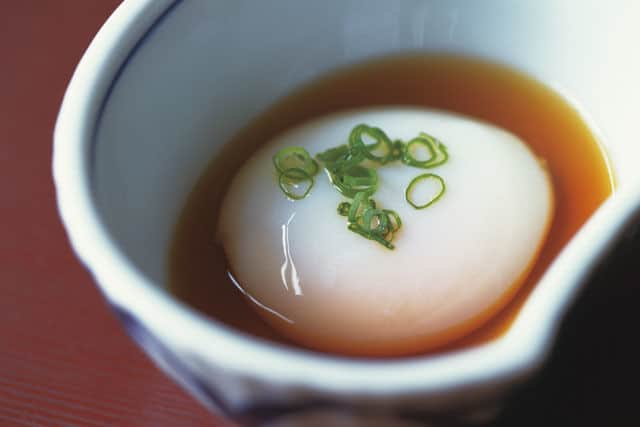

Onsen Egg

Ingredients
- 4 cups water
- 6 large eggs
- 1cup soya sauce
- 1cup (cold) water
Instructions
- Bring water to boil in a covered pot.
- Remove pot from heat, add cold water, and place eggs in pot slowly. Cover.
- Remove eggs from pot after 17 minutes.
- Place eggs in soya sauce and 1 cup water, store covered for 1 day, (up to 5 days) before consuming.